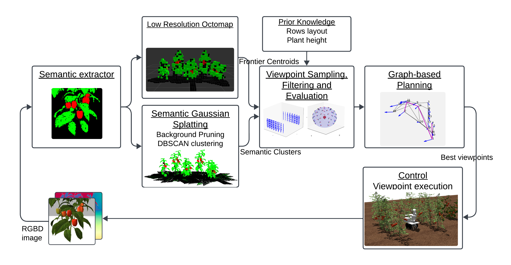
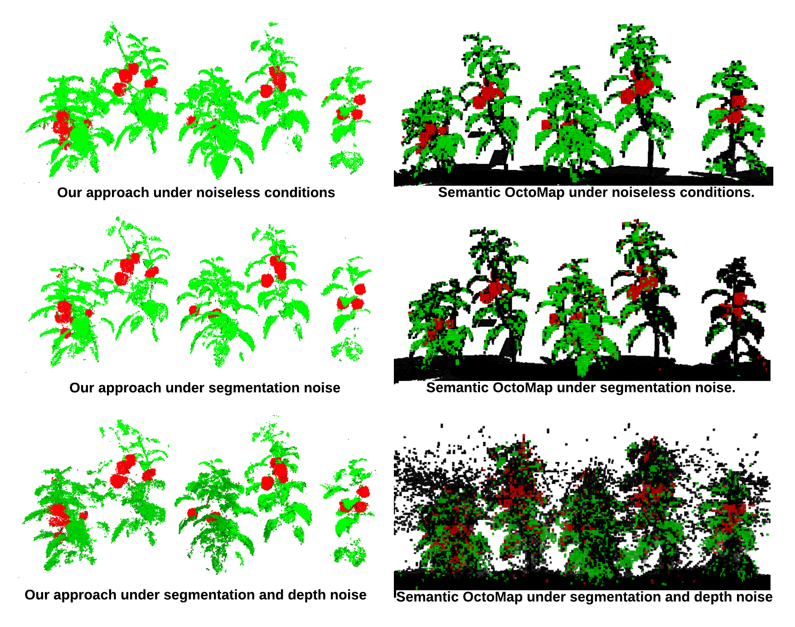

Semantic reconstruction of agricultural scenes plays a vital role in tasks such as phenotyping and yield estimation. However, traditional approaches that rely on manual scanning or fixed camera setups remain a major bottleneck in this process. In this work, we propose an active 3D reconstruction framework for horticultural environments using a mobile manipulator. The proposed system integrates the classical OctoMap representation with 3D Gaussian Splatting to enable accurate and efficient target-aware mapping. While a low-resolution OctoMap provides probabilistic occupancy information for informative viewpoint selection and collision-free planning, 3D Gaussian Splatting leverages geometric, photometric, and semantic information to optimize a set of 3D Gaussians for high-fidelity scene reconstruction. We further introduce a robust mapping strategy that mitigates the effects of semantic segmentation and depth noise, together with a background pruning method that reduces memory consumption and computational cost. Extensive experiments in simulation, a controlled laboratory environment, and a real greenhouse demonstrate the practical applicability of our framework. In simulation, where ground-truth geometry is available, our approach outperforms occupancy-based mapping in both reconstruction accuracy and runtime efficiency: compared to a 0.01 m-resolution OctoMap, our method doubles the fruit-level F1 score under noisy conditions while achieving up to a threefold reduction in runtime. Finally, the reconstructed semantic maps enable fruit counting and volume estimation with accuracies approaching 80%.

